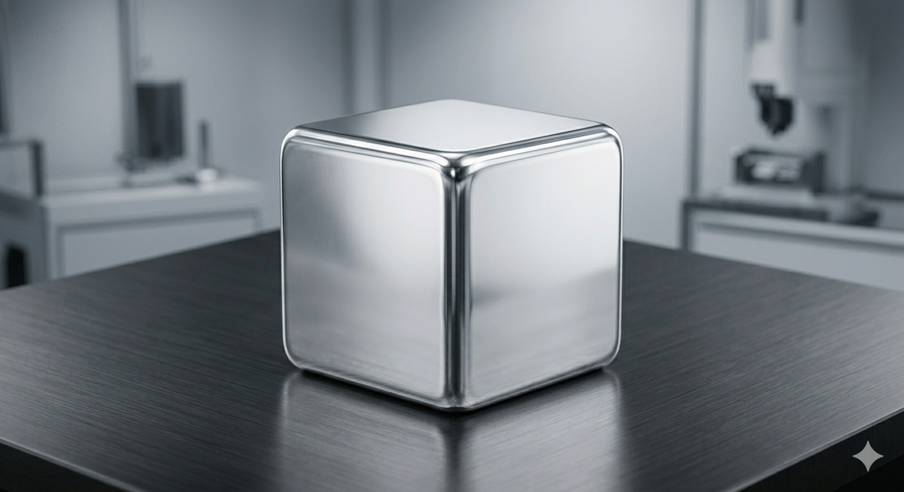
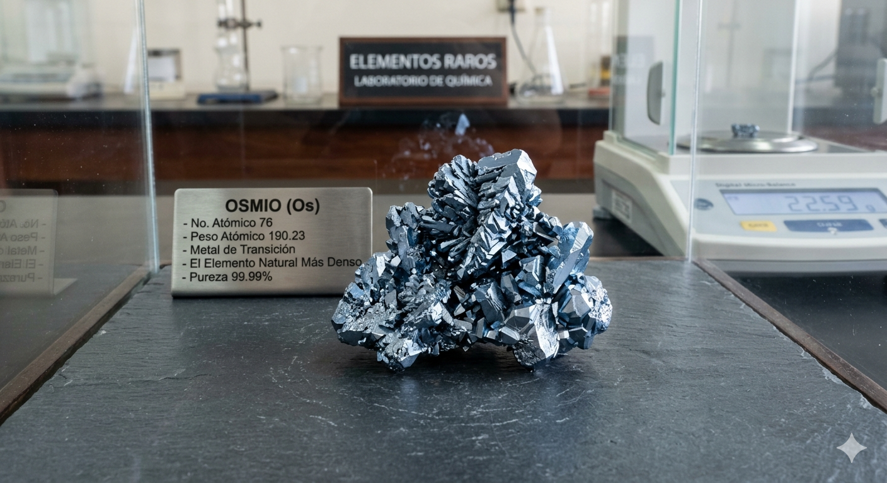
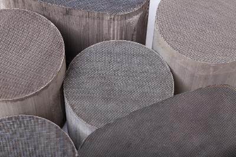
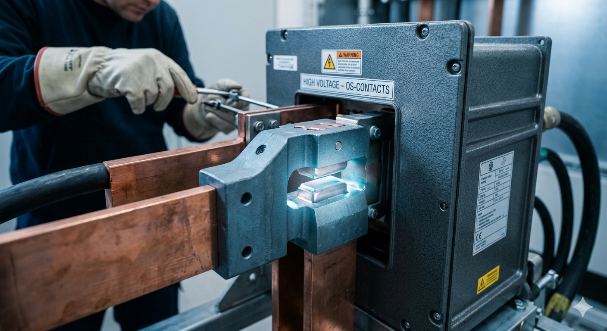

Documentación Técnica
El Iridio es reconocido como el material más resistente a la corrosión que se conoce. Incluso a temperaturas de 2000°C, permanece prácticamente inalterado por ácidos o silicatos fundidos.
Propiedades Clave: Es el segundo metal más denso (22.56 \text{ g/cm}^3) y posee un módulo elástico extremadamente alto, lo que lo hace muy rígido y difícil de mecanizar.
Aplicaciones Industriales: Se utiliza en crisoles para el crecimiento de cristales de alta pureza (como los usados en láseres) y en electrodos de bujías de alto rendimiento para motores aeronáuticos, donde la erosión por chispa debe ser mínima.

Debido a su alto punto de fusión y resistencia extrema, el iridio es fundamental en la fabricación de crisoles de laboratorio para fundir otros metales a altas temperaturas y, crucialmente, para bujías de alto rendimiento en motores de aviación y automoción de lujo, donde soporta condiciones extremas sin corroerse.
El Osmio ostenta el título del elemento natural más denso de la tabla periódica, Es un metal azul grisáceo, extremadamente duro y frágil(quebradizo).
Propiedades Clave: Tiene un punto de fusión muy elevado (3033°C) y una compresibilidad bajísima, comparable a la del diamante. En estado sólido es inerte, pero en polvo puede formar el tetróxido de osmio (OsO_4), un agente oxidante potente y tóxico.
Aplicaciones Industriales: Debido a su extrema dureza, se utiliza en aleaciones para contactos eléctricos que sufren gran fricción, puntas de bolígrafos de lujo y pivotes de instrumentos de medición de alta precisión.

La aplicación más masiva del paladio es en la industria automotriz, donde es el componente clave de los convertidores catalíticos (catalizadores) para reducir las emisiones tóxicas de los gases de escape. También es vital en la electrónica (condensadores de cerámica multicapa) y en la purificación de hidrógeno.
El Paladio es el metal menos denso y con el punto de fusión más bajo de los PGM, pero posee una capacidad asombrosa: puede absorber hasta 900 veces su propio volumen en gas hidrógeno a temperatura ambiente.
Propiedades Clave: Actúa como un catalizador excepcional. Su capacidad para "secuestrar" hidrógeno lo hace vital en procesos de purificación química.
Aplicaciones Industriales: Es un componente crítico en los convertidores catalíticos de vehículos de gasolina para reducir emisiones nocivas. También es fundamental en la electrónica (condensadores cerámicos multicapa) y en la odontología debido a su biocompatibilidad.

La aplicación más masiva del paladio es en la industria automotriz, donde es el componente clave de los convertidores catalíticos (catalizadores) para reducir las emisiones tóxicas de los gases de escape. También es vital en la electrónica (condensadores de cerámica multicapa) y en la purificación de hidrógeno.
El Rodio es uno de los metales más caros y escasos del mundo. Destaca por su increíble reflectividad y su eficiencia catalítica superior frente a los óxidos de nitrógeno
Propiedades Clave: Es excepcionalmente resistente a la oxidación y mantiene su brillo metálico bajo casi cualquier condición ambiental. Es más duro que el platino y el paladio.
Aplicaciones Industriales: Es el catalizador más eficaz para eliminar gases tóxicos en la industria automotriz. En joyería, se utiliza como recubrimiento (baño de rodio) para dar al oro blanco y a la plata una dureza extra y un brillo blanco frío inigualable.

La principal aplicación del rodio es también en los convertidores catalíticos de automóviles, específicamente para reducir los óxidos de nitrógeno (NOx) en los gases de escape. Debido a su alto brillo y resistencia a la corrosión, se usa extensamente para el baño de rodio (galvanoplastia) en joyería de oro blanco y plata, y en la fabricación de espejos de alta reflectividad para instrumentos ópticos y focos de cine.